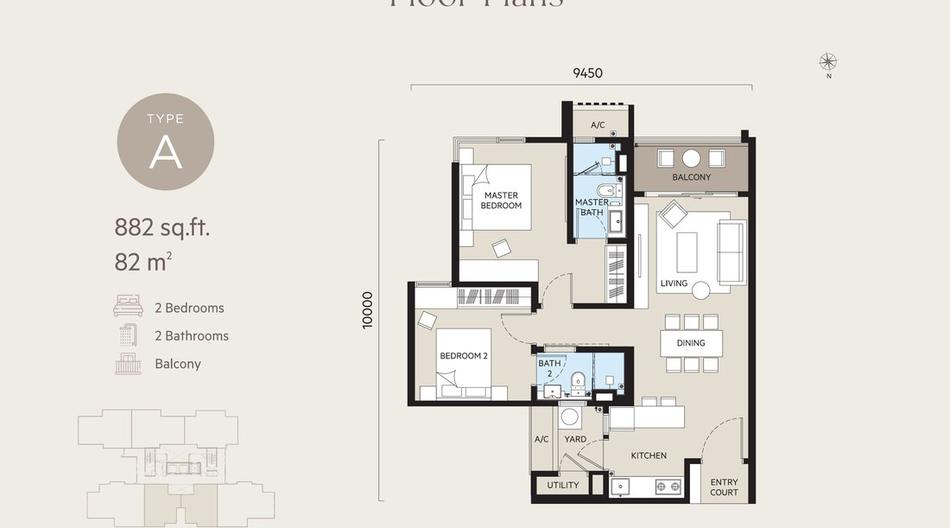
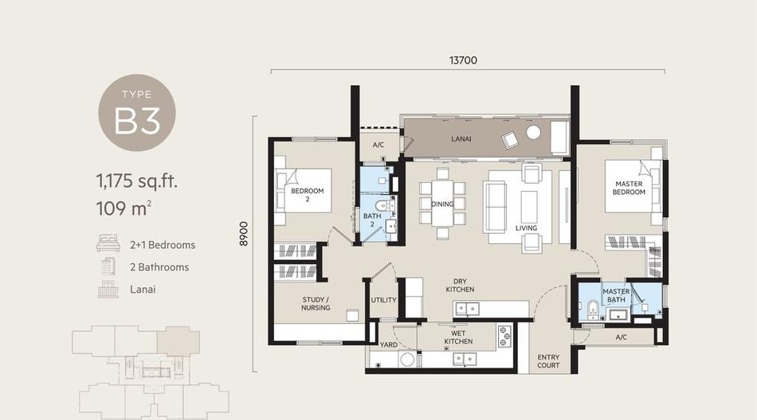
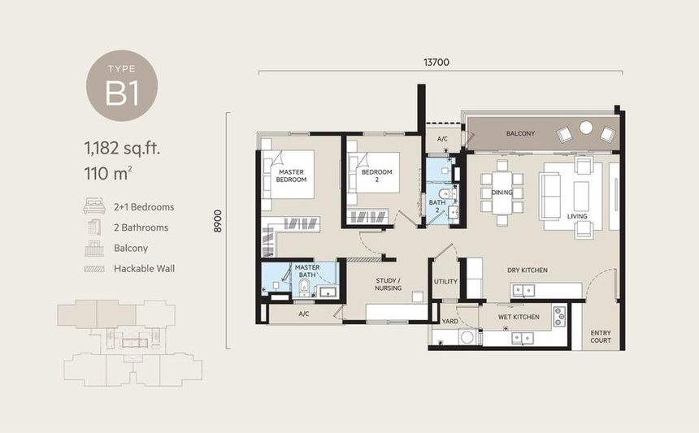
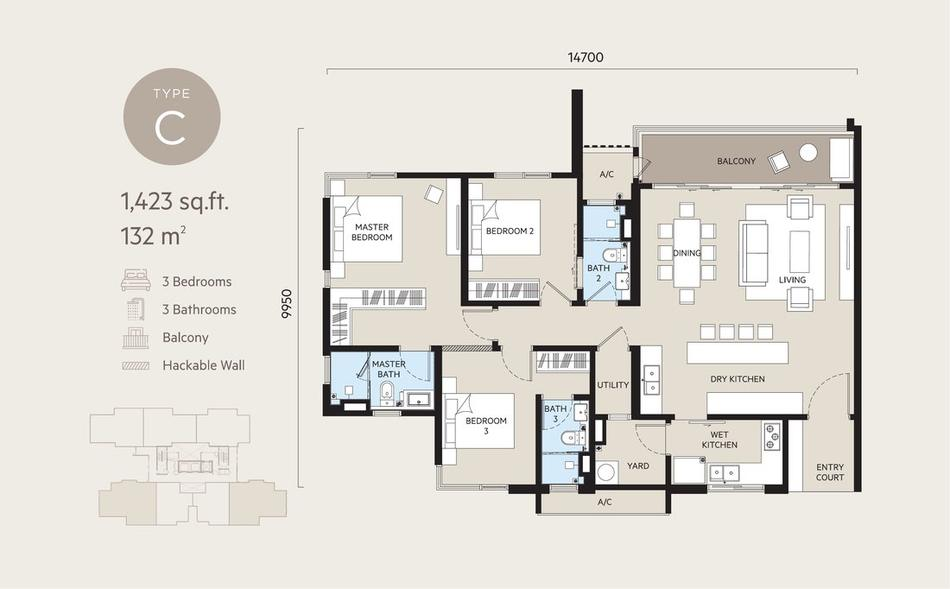

OAKA Residences
About OAKA Residences
Top Highlights
Project Details
| OAKA Residences | |
| Berjaya Hartanah Berhad | |
| 2.2 acres | |
| 350 units across Block A (175) and Block B (175), 6–30 storeys | |
| Tower A RM914–983 psf; Tower B RM980–1,056 psf (Gross) | |
| RM0.51 psf (incl. sinking fund) | |
| Basement–Level 4; Type A: 2CP, Type B1/B2/B3: 2CP, Type C: 3CP | |
| GreenRE Gold Certified, Pet-Friendly Community | |
| Sales package updated 4 June 2026; booking fee RM5,000 |
Location
OAKA Residences sits on Jalan Jalil Perkasa 7 in Bukit Jalil, directly beside Bukit Jalil Golf & Country Resort with unblocked views toward the KL skyline. It's close to IMU University, SJK(C) Lai Meng, SMK Bukit Jalil and APU University, with Columbia Asia Hospital, Bukit Jalil Recreational Park, Bukit Jalil National Stadium and Pavilion Bukit Jalil all within a few kilometres. Sri Petaling and Awan Besar LRT stations, plus the KESAS, MEX, Bukit Jalil Highway and Sungai Besi Expressway, keep the rest of KL within easy reach.
- IMU University (1.0 km)
- Columbia Asia Hospital (1.0 km)
- Bukit Jalil Recreational Park (1.3 km)
- Bukit Jalil National Stadium (1.7 km)
- Bukit Jalil Golf & Country Resort (1.8 km)
- Pavilion Bukit Jalil (2.4 km)
OAKA Residences Floor Plans & Unit Types

Type A

Type B3

Type B1
